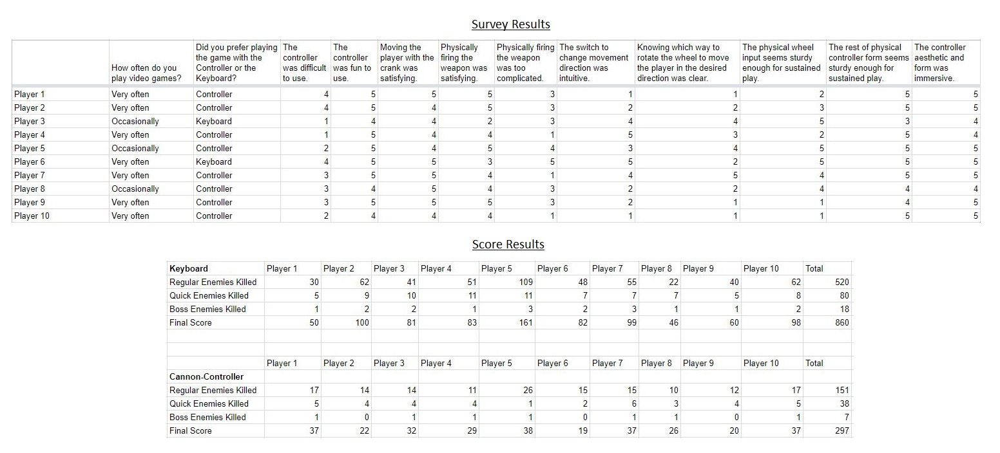

Heuristic Evaluation
Controller Layout:
Feedback proposes that the control layout is relatively intuitive and easy to learn with one expert however suggesting that movement controls can be confusing with regard to which directional plane the user is currently traversing.
Burden on the Player:
Feedback suggest use of the controller is challenging but fun. A suggestion was made that two cranks could be used instead of one to provide simultaneous directional movement. This would reduce any frustration the player might have when needing to make fast movements.
Game Story Immersion:
Feedback proposed that the aesthetic form of the controller fits the general theme of the demo game well, with one expert saying “you get a good idea that you are loading up a cannon or a mortar to shoot”. One suggestion was to make the art style of the enemies less modernised, perhaps in fitting with the 16th century style of the cannon.
Error Prevention:
Feedback suggests the crank input is too flimsy to stand sustained usage and should be re-designed. Also it was noted that on occasion the fire trigger inside the cannon bore hole would not trigger on screen, suggesting a re-design may be required.
User Control and Freedom:
Feedback supports the earlier suggestion of an additional crank being added to allow the user to move in both axes simultaneously. As it is the user felt too limited with regards to movement.
Visibility of System Status:
Experts had continuous problems with discerning which axis they were engaged with as well as one expert also suggesting that not knowing which way to turn the crank to go in the desired direction was an issue, although with repeated use these might be mitigated.
Controller Provides Feedback:
Experts noted that the percussion audio feedback as a result of the ball rolling down the controller was a positive, as well as the tactile response from the crank. One expert did suggest that there could be more feedback when switching between the two axes and another also brought up the issue where the firing mechanism would not always fire in-game.
Survey Results
